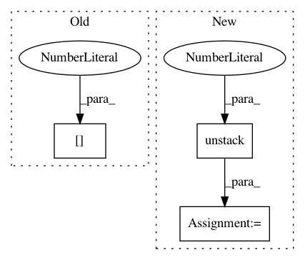

6a455db8f33ceefa0f8c544dc427ba6402f85588,gpflow/conditionals/uncertain_conditionals.py,,uncertain_conditional,#Any#Any#Any#Any#Any#Any#,12
Before Change
num_data = Xnew_mu.shape[0] // number of new inputs (N)
num_ind = q_mu.shape[0] // number of inducing points (M)
num_func = q_mu.shape[1] // output dimension (D)
q_sqrt_r = tf.linalg.band_part(q_sqrt, -1, 0) // [D, M, M]
After Change
pXnew = Gaussian(Xnew_mu, Xnew_var)
num_data = tf.shape(Xnew_mu)[0] // number of new inputs (N)
num_ind, num_func = tf.unstack(tf.shape(q_mu), num=2, axis=0) // number of inducing points (M), output dimension (D)
q_sqrt_r = tf.linalg.band_part(q_sqrt, -1, 0) // [D, M, M]
eKuf = tf.transpose(expectation(pXnew, (kernel, inducing_variable))) // [M, N] (psi1)
In pattern: SUPERPATTERN
Frequency: 3
Non-data size: 3
Instances
Project Name: GPflow/GPflow
Commit Name: 6a455db8f33ceefa0f8c544dc427ba6402f85588
Time: 2020-01-07
Author: st--@users.noreply.github.com
File Name: gpflow/conditionals/uncertain_conditionals.py
Class Name:
Method Name: uncertain_conditional
Project Name: googledatalab/pydatalab
Commit Name: d98df66f581dca38bbe7dfc299386921b65bda0d
Time: 2017-09-28
Author: qimingj@users.noreply.github.com
File Name: solutionbox/code_free_ml/mltoolbox/code_free_ml/trainer/task.py
Class Name:
Method Name: make_prediction_output_tensors
Project Name: fizyr/keras-retinanet
Commit Name: 8a0267c11999e3165de11ffd27b3bb5a95d58668
Time: 2019-09-26
Author: simone.merello@perceptolab.com
File Name: keras_retinanet/layers/_misc.py
Class Name: ClipBoxes
Method Name: call